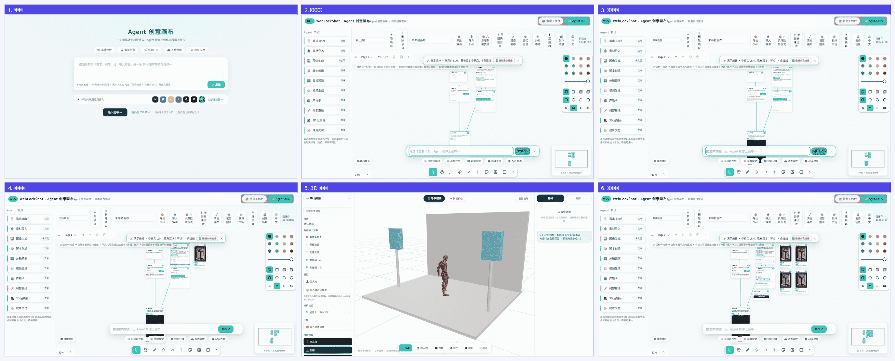
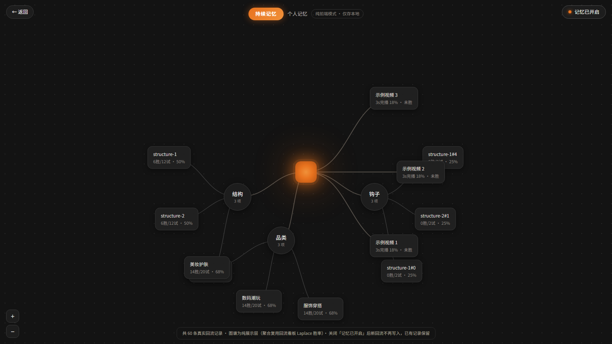
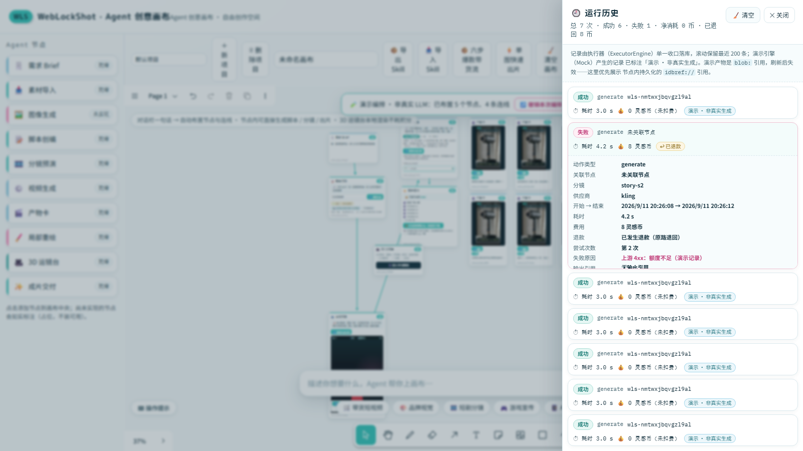

在浏览器里跑完的创意生产工作台：在无限画布上用一句话布置 Agent 节点， 从脚本一路做到可直接导入剪映继续剪辑的成片工程。
打开链接即可完整体验，不需要注册、不需要配置任何 Key：对话栏说一句话，画布上会自动长出一条 Agent 节点链路；点几下就能拿到脚本、9:16 分镜预演、逐镜出片，最后打包出一份能导入剪映的工程文件。
下面这条分镜条由真实操作录屏（约 30 秒）抽取关键帧合成，顺序为从左到右、从上到下：

六个关键节点分别是：
演示默认走演示引擎（不耗积分、可离线跑通全链路），界面会如实标注「演示编排 · 非真实 LLM」。 配置引擎 Key 后即切换为真实生成。
| 节点 | 作用 | 状态 |
|---|---|---|
| 🗒️ 需求 Brief | 一句话需求 → 结构化 Brief（给谁看 / 突出什么） | 可用 |
| 📥 素材导入 | 商品图 / 参考图 / 视频统一入口，本地读取直接产出图片产物卡 | 可用 |
| 📝 脚本创编 | ScriptWriter + Critic 双智体：口播 / 剧情台词 / 品牌叙事 | 可用 |
| 🎞️ 分镜预演 | 连入 script 后生成 6 镜，内嵌 9:16 GSAP 预演（本地预演 · 非成片） | 可用 |
| ⚙️ 视频生成 | 逐镜生成，ExecutorEngine 串行队列 + 钱包两阶段事务 | 可用 |
| 🎬 产物卡 | 单镜出片产物（大资产入 IndexedDB），可连线送入成片交付 | 可用 |
| 🖌️ 局部重绘 | 产物卡 → 笔刷 / 框选涂抹 → inpaint 重绘，产物版本堆叠可回退 | 可用 |
| 🎥 3D 运镜台 | 摆角色 / 调机位 / 录关键帧，接单镜直出或自由镜数分镜 | 可用 |
| ✨ 成片交付 | 打包剪映草稿三轨对齐工程 + 素材 zip | 可用 |
| 🖼️ 图像生成 | 文生图 / 图生图 | 规划中（界面如实标注） |
这是整个画布的骨架：一句话进来，拓扑自己长出来。


同类创意画布大多止步于 2D 出图；这里内置了一套本地 3D 预演台——全程浏览器内 three.js 渲染， 不消耗任何积分、不依赖云端 GPU：

记忆系统把「历史回流数据」变成可回看的图结构，并反哺脚本生成：

官方内置 + 已安装统一管理：安装 / 启停 / 卸载 / 发布到本地。Skill 让「一次编排」变成可复用的工作流资产。

六类创作场景卡片，点击可预填对话栏或一键编排，复用同一套编排路由。

7 个推荐连接器卡片位 + 自定义添加；协议层状态如实标注（纯前端模式 / 仅接口）。

顶栏「🌐 中文 / EN」一键切换并持久化，英文界面同样完整可用（真实 i18n 字典，非截图贴图）。

交付的不是「一段 mp4」，而是可以继续剪的工程：视频轨 + 旁白音轨 + 花字字幕轨微秒级对齐的
draft_content.json 与素材一起打包成 zip，解压放进剪映草稿目录即可打开；伴生服务在线时还可一键落盘。
每次节点执行落一条记录（由执行器单一收口写入，滚动保留最近 200 条）：状态 / 耗时 /
费用（灵感币）/ 是否退款 / 失败原因，可展开看关联节点、分镜、供应商、尝试次数与输出引用
（优先展示节点内持久化的 idbref://）。与虚拟钱包打通是本项目的差异化信息——这一次花了多少、
退了没有，一目了然。

| 层 | 职责 | 关键模块 |
|---|---|---|
| 入口层 | 开场层 / 对话栏 / 场景模板 | 开场引导、对话栏、场景模板 chips |
| 编排层 | 一句话 → 节点拓扑 | 场景路由 + LLM 编排（可降级演示编排） |
| 画布层 | 无限画布 + 9 类节点 | tldraw 5 + 自研 shapeUtils、CanvasDoc 契约、localStorage 持久化 + 多标签同步 |
| 执行层 | 串行队列 + 结算 | ExecutorEngine、灵感币钱包（两阶段事务） |
| 能力层 | 脚本 / 分镜 / 出片 / 重绘 / 3D | ScriptWriter + Critic、6 引擎契约、three.js 运镜台 |
| 交付层 | 产物卡 + 剪映工程 | 剪映草稿三轨对齐 + 零依赖 zip |
| 支撑层 | 本地优先 / 可选伴生服务 | IndexedDB 大资产、TTS / ffmpeg / sqlite / MCP |
| 部分 | 文件数 | 行数 |
|---|---|---|
前端 TS/TSX（src/） |
185 | 33,899 |
样式（src/**/*.css） |
8 | 8,244 |
伴生服务（server/） |
16 | 5,187 |
测试与工具脚本（scripts/） |
15 | 3,315 |
| 套件 | 命令 | 当前结果 |
|---|---|---|
| 单元测试（node） | npm test |
449 项，0 失败 |
| 组件测试（vitest） | npm run test:ui |
26 项，0 失败 |
| 画布 E2E（真实鼠标路径） | npm run e2e |
17/17 |
| 移动端窄屏断言（双视口） | npm run e2e:mobile |
15/15 |
| 子路径部署回归 | npm run e2e:basepath |
全过 |
| 生产模式回归 | npm run e2e:prod |
全过 |
| 降级 / 迁移矩阵 | npm run degrade |
6/6 |
| 跨浏览器 + a11y | npm run a11y |
chromium / webkit 双引擎，axe 严重项 0 |
| 性能基准 | npm run perf |
见 docs/perf.md |
# 在线直接体验（免安装、免 Key）
https://qwqcool.github.io/WebLockShot/
# 本地跑起来
git clone https://github.com/QWQcool/WebLockShot.git
cd WebLockShot && npm install
npm run dev # 打开 http://localhost:5173
# 质量门禁（可自行复现第七章的全部数字）
npm test # 单元测试
npm run e2e # 17 步实机 E2E